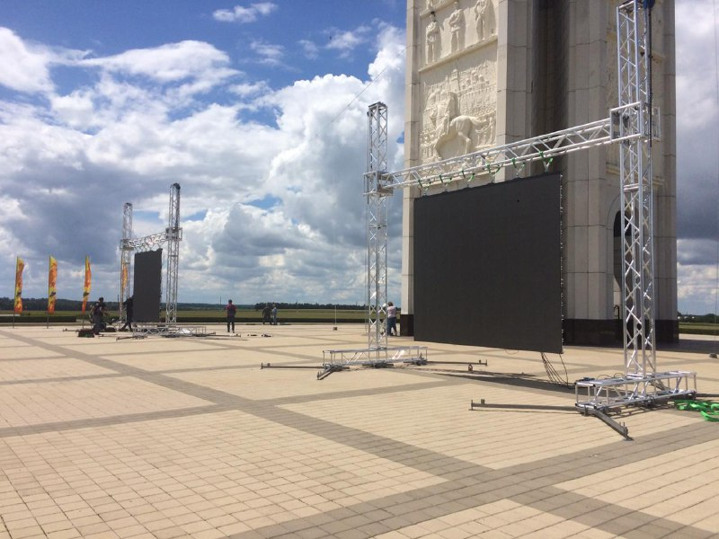
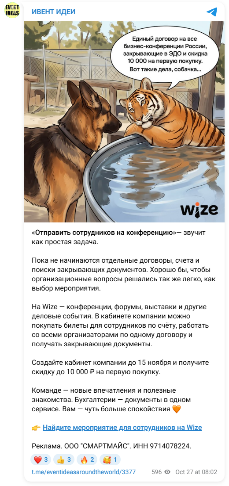
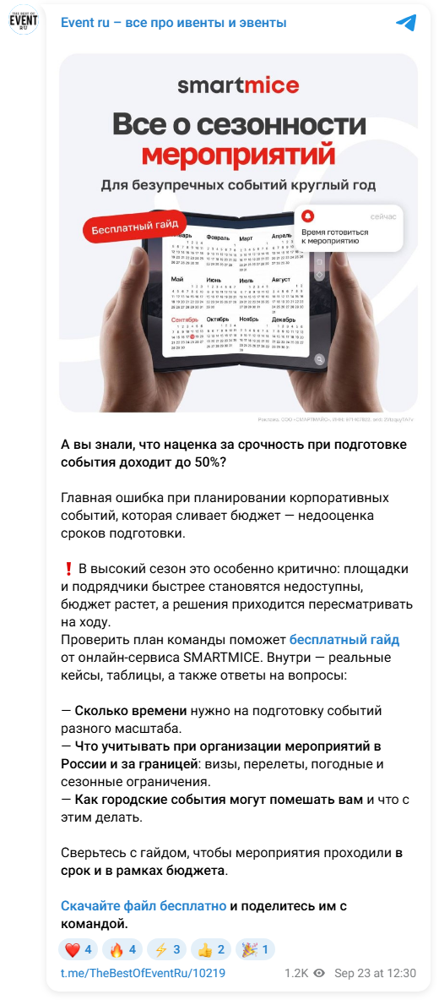
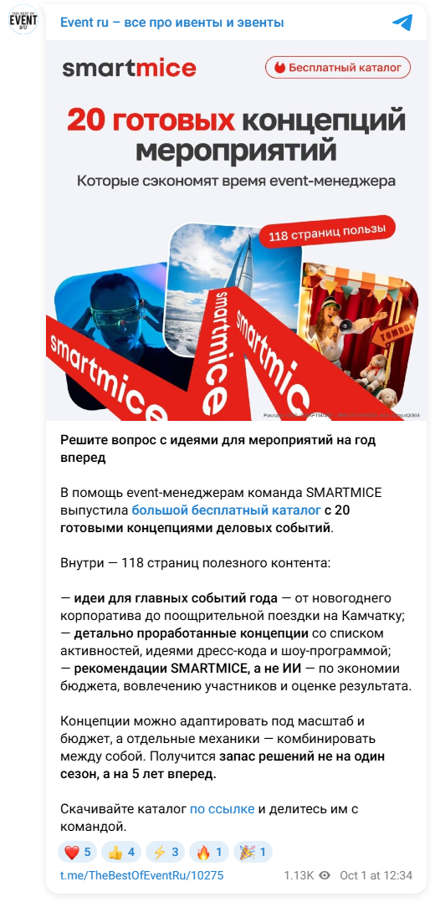
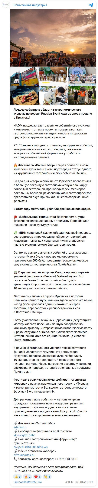

Сначала восемь каналов конкурентов
Прочитано 160 последних доступных сообщений: по 20 на канал. Пять технических компаний, два театральных продукта и один смежный детский. У семи есть сообщения за последние 30 дней.
| Канал · аудитория | О чём пишут | Путь к заказу и вывод для нас |
|---|---|---|
| MisterVo 1 181 подписчиков Техника | Каталог в действии: 6 из 20 сообщений — демонстрация ассортимента, 5 — короткие рабочие статусы. Видео с площадки и реквизитом. | Пост → конкретная карточка техники → контакт. Для нас: показать задачу и решение, добавить состав работы команды. |
| MF Group 195 подписчиков Техника | 8 из 20 — кейсы и инженерные решения; 5 — выбор подрядчика, бюджет и риски. Объясняют ответственность одной команды. | Сайт, сообщение каналу или внешняя статья. Для нас: кейс «задача → решение → состав → расчёт», с одним следующим шагом. |
| SHOWIN 243 подписчиков Техника | Кейсы и коллаборации — 5 из 20; визуализации — 4; командный юмор и короткие подписи — 6. | Контакты в шапке; есть и прямое приглашение арендовать свет. Для нас: объяснять результат для агентства, отличать концепцию от выполненного проекта. |
| ЭнергоСнаб 251 подписчиков Техника | Электроснабжение: 9 из 20 — подписанные фестивальные кейсы. Все 20 содержат видео, но полные ролики не просмотрены. | Часто переход в MAX; сайт и телефон в шапке. Для нас: раскрыть состав своей работы, а не ограничиваться «обеспечили энергией». |
| Fresh Vision 30 подписчиков Техника | Оснащение событий, экраны и трансляции. Канал возобновился 17 октября после паузы. Есть небольшие задачи по добавлению техники на готовую площадку. | В выборке нет постоянного ясного запроса вводных. Для нас: законченный кейс с работой инженера и понятным обращением. |
| Event-Театр 17 подписчиков Взрослый театр | 8 из 20 — репертуар, трейлеры и участие гостей. Объясняют выбор между готовой программой и постановкой с нуля. | Просят дату, город, гостей и бюджет. Для нас: показать роль зрителя и подтверждённые параметры своей программы. |
| Интриганы 64 подписчиков Взрослый театр | 9 из 20 — сюжеты, анонсы и билеты. Последнее видимое сообщение — 27 марта. Продуктовый аналог на собственной площадке. | Сайт покупки билетов; отдельный контакт аренды площадки. Для нас: взять ясность механики, адаптировать к выездному спектаклю. |
| МОРЕШОУ 1 488 подписчиков Смежный пример | Детские и семейные праздники: сезонные программы, свободные даты, состав пакета. 14 из 20 сообщений без доступной подписи — их темы целиком не классифицированы. | Обращение к менеджеру, короткий бриф. Применимы ясность состава и шага заказа; детскую аудиторию не переносим на взрослый театр. |
Подписчики: точные публичные счётчики на 1 ноября 2026. География компаний и содержание подсказывают предполагаемого клиента; состав и местоположение подписчиков не установлены.
По три конкретных примера каждого канала и период выборки
MisterVo
20 сообщений: 2026-09-19 — 2026-10-31. За последние 30 дней — 12.
MF Group
20 сообщений: 2026-07-28 — 2026-10-23. За последние 30 дней — 4.
SHOWIN
20 сообщений: 2026-09-22 — 2026-10-30. За последние 30 дней — 13.
ЭнергоСнаб
20 сообщений: 2026-08-25 — 2026-10-28. За последние 30 дней — 8.
Fresh Vision
20 сообщений: 2026-03-19 — 2026-11-01. За последние 30 дней — 12.
Event-Театр
20 сообщений: 2026-04-22 — 2026-10-25. За последние 30 дней — 12.
- Можно участвовать или наблюдать →
- Готовая постановка или новая история →
- Подготовка декабрьского события →
Интриганы
20 сообщений: 2026-01-30 — 2026-03-27. За последние 30 дней — 0.
МОРЕШОУ
20 сообщений: 2026-10-20 — 2026-10-31. Последние 20 покрывают только 20–31 октября; полный месячный темп не установлен.
Просмотры: сопоставимое правило возраста, разные календарные периоды
Берём только сообщения возрастом 7–180 дней внутри последних 20 каждого канала. Это медиана публичных счётчиков, а не уникальная аудитория или заявки. Видео целиком не просматривались; темы классифицированы по доступным подписям.
| Канал | Медиана просмотров | Сообщений в расчёте |
|---|---|---|
| MisterVo | 546 | 16 |
| MF Group | 219,5 | 20 |
| SHOWIN | 114 | 17 |
| ЭнергоСнаб | 179 | 19 |
| Fresh Vision | 28,5 | 8 |
| Event-Театр | 6 | 17 |
| Интриганы | Нет сообщений нужного возраста | 0 |
| МОРЕШОУ | 110 | 10 |
Один альбом — один видимый блок; отдельно отправленная подпись — отдельное сообщение. 160 сообщений не равны 160 проектам. У Fresh Vision и Event-Театра есть паузы публикаций, у «Интриганов» нет сообщений в возрастном окне.
Как содержание связано с рекламой
Пост компании показывает её подачу. Маркированный пост в чужом канале показывает рекламное предложение. Ни один из этих источников сам по себе не раскрывает продажи.
Обещание одного подрядчика раскрывается перечнем работ. Для «Спектра» проверяем такой же понятный разбор собственного кейса.
Пост объясняет решение заказчика и просит вводные. У своих программ добавим длительность и требования к площадке.
12 публикаций ивент-предложений, 3 — сценического оборудования, 4 — генераторов. Только МОРЕШОУ напрямую связывает один из восьми разобранных каналов с этой рекламной подборкой: детские пакеты в «Дети in Moscow» продолжаются в собственной ленте.
В этой подборке нет подтверждённых внешних размещений семи остальных основных конкурентов. Это пробел выборки, а не доказательство, что они не рекламируются. ЭнергоСнаб и Энергоконтинент — разные компании; поставщики оборудования из «Шоу-Мастера» не становятся рекламой пяти изученных прокатов.
Рекомендация: подготовить два законченных предложения в собственном канале — техобеспечение конкретного события и взрослый спектакль. Затем проверять подходящее внешнее размещение с отдельной ссылкой. Экспертную памятку оставить третьей гипотезой в резерве. Основания и условия проверки →
Как рекламируют технику
Ниже — 3 маркированные публикации производителей и поставщиков сценического оборудования. Далее — 12 объявлений ивент-услуг и 4 публикации генераторов. Всего разобраны 19 постов, с разделением по продукту и аудитории.
Как подобрать конструкцию для LED-экрана



Кому: специалисту, который выбирает конструкцию для LED-экрана. По содержанию это профессиональная техническая аудитория; состав подписчиков канала отдельно не измерен.
Что продают: фермовые конструкции через материал о выборе подвеса. Объявление разбирает размеры, вес и условия эксплуатации экрана.
Креатив: два фото экранов на конструкциях — снаружи и в зале. Видна техническая реализация, а не абстрактный баннер.
Куда ведут: на полную статью во VK и раздел фермовых конструкций SCENA.PRO. В коммерческой ссылке есть erid.
Оценка: конкретная проблема и объяснение параметров демонстрируют компетентность. Два разных перехода усложняют выбор следующего шага. Пост рекламирует оборудование, не подтверждённую аренду экрана для события.
Для «Спектра»: взять принцип «задача площадки → что проверяем → решение». В объявлении оставить один шаг: прислать параметры площадки для подбора оборудования. Не выдавать эту публикацию за доказательство спроса на наш прокат.
Открыть рекламную статью →Показать, какую сценическую задачу решило оборудование


Первый пост — «Бесы»: объяснены материал искусственного пепла, типы машин и их роль в сценическом эффекте. Два фото показывают результат на сцене.
Второй — «Сирано де Бержерак»: бумажный вихрь, сброс полотен и устройства, которые создают эффекты. Четыре фото связывают готовую сцену с оборудованием.
Кому и куда: театральным и техническим специалистам; ссылка с erid ведёт на GLOBAL EFFECTS. Проверенный бизнес рекламодателя — производство и продажа оборудования/расходников. Его собственная услуга аренды этим не подтверждена.
Оценка: названный проект и роль оборудования убедительнее одного каталога моделей. Но нет прямого запроса расчёта под задачу читателя; просмотры не показывают продажи.
Для «Спектра»: рекламный кейс «что требовалось → что установили → как работала команда → запрос расчёта». Фото с вашей работы и задача заказчика должны быть связаны в одном сообщении.
Как рекламируют услуги организаторам мероприятий
12 объявлений ивент-подрядчиков и сервисов. Ещё 4 публикации поставщиков генераторов разобраны отдельно. Собственные посты компаний и упоминания партнёров в этот счёт не входят.
У каждого объявления — оригинал, изображение, предложение, путь клиента и вывод для «Спектра». Критическая оценка описывает сильные и слабые стороны сообщения. Окупаемость без данных о заказах не устанавливаем.
МОРЕШОУ: три пакета с ценами

Кому адресовано. Заказчик праздника в детском саду или школе. Не аудитория взрослого спектакля.
Что предлагают. Снять подготовку с заказчика: костюмы, реквизит и музыка включены. Пакеты 16 000 / 36 000 / 92 000 рублей, транспорт отдельно.
Что видно на креативе. Картинка-прайс: три пакета, длительность, число участников, состав и цены. Мелкий текст требует увеличения; реального праздника на макете нет.
Куда ведут. Написать в чат для подбора программы; дополнительно ссылка на фотографии праздников.
Оценка. Сильное: можно сравнить состав и цену до обращения. Вопрос к предложению: макет ограничивает пакеты 10–20 участниками, тогда как текст обещает формат для целого класса. Необходимо уточнение условий.
Для «Спектра». проверять прозрачный состав комплекта и границы расчёта. Цены МОРЕШОУ и детскую аудиторию переносить на наш продукт нельзя.
Признак рекламы: В тексте #реклама, erid и ссылка на сведения о рекламодателе.
Открыть оригинал объявления →SMARTMICE: пять идей для корпоратива

Кому адресовано. Event-менеджер, которому нужно подготовить корпоратив. Эта аудитория названа на макете.
Что предлагают. Проблема — аврал при подготовке. Предложение — готовые концепции, сценарии и оформление в бесплатном гайде.
Что видно на креативе. Красный макет: крупно число идей и бесплатность, ниже разворот файла. Визуал показывает продукт, который предлагают получить.
Куда ведут. Ссылка с UTM и erid ведёт на страницу гайда. На странице есть форма получения файла и отдельный бриф на услуги.
Оценка. Сильное: одно понятное действие и видимый результат скачивания. Риск: человек может хотеть идеи, но не подрядчика. Четыре поста с файлами не доказывают продажи.
Для «Спектра». чек-лист подготовки площадки можно проверить позднее. Сначала важнее измерить спрос на саму услугу; скачивание не считать заявкой.
Признак рекламы: Реклама и реквизиты на макете; erid в ссылке.
Открыть оригинал объявления →Wize: один договор и документы


Кому адресовано. Сотрудник компании, оформляющий участие коллег в конференциях.
Что предлагают. Предлагают покупать билеты по счёту и получать документы в одном кабинете; скидка до 10 000 рублей до 15 ноября.
Что видно на креативе. Иллюстрация с собакой и тигром; в реплике сразу помещены договор, документы и скидка.
Куда ведут. Призыв найти мероприятие на Wize, ссылка через tglink.io. Полный путь после короткой ссылки не проверен.
Оценка. Сильное: названа конкретная административная проблема покупателя. Риск: развлекательная картинка может отвлекать; её результат не измерен. Пост разобран по сохранённому скриншоту 28.10: при повторной проверке 01.11 виджет сообщил Post not found. Причина недоступности неизвестна.
Для «Спектра». в объявлении для агентства назвать состав работ, ответственность и документы, которые компания действительно предоставляет. Скидку и мем копировать не требуется.
Признак рекламы: В архивном оригинале есть «Реклама», ООО «СМАРТМАЙС» и ИНН.
Открыть оригинал объявления →ПатиРакеты и Neo Names: показ для ивентщиков

Кому адресовано. Профессионалы ивент-индустрии: приглашение прямо адресовано «Ивент-Семье».
Что предлагают. Бесплатный вход на концерт двух коллективов; указаны дата, время и московский зал.
Что видно на креативе. Видео 10 секунд; на сохранённой обложке красный волк. Сам ход ролика по скриншоту не оценивался.
Куда ведут. Заполнить заявку → Telegram-бот partyrocketbot. Сценарий внутри бота не запускался.
Оценка. Сильное: человеку дают возможность увидеть продукт. Риск: регистрация на бесплатный концерт не равна заказу выступления; организация собственного показа требует ресурсов.
Для «Спектра». Для взрослого спектакля «Спектра»: сначала проверить видеофрагмент и запрос программы/условий. Отдельный бесплатный показ без расчёта затрат не рекомендую.
Признак рекламы: В тексте «Реклама», рекламодатель и erid.
Открыть оригинал объявления →Продакшн Валерия Володина: рекламный кейс

Кому адресовано. Организатор церемонии или масштабного события; обращение к нему есть в конце текста.
Что предлагают. Предлагается оценить режиссёрское решение на конкретном проекте: площадка, постановка, оркестр, хор и балет.
Что видно на креативе. Видео 36 секунд; на сохранённом кадре видны сцена и экран. Покадровый монтаж видео в этом проходе не оценивался.
Куда ведут. Ссылка на сайт команды; прямого предложения запросить расчёт или программу в тексте нет.
Оценка. Сильное: результат показан на выполненном проекте. Слабое место: после просмотра не обозначен следующий коммерческий шаг. Это рекламный кейс — маркировка есть на видео и в ссылке.
Для «Спектра». короткий кейс должен завершаться запросом даты, площадки и задачи для расчёта. Не ограничиваться красивой съёмкой.
Признак рекламы: Рекламные реквизиты на видео; erid в ссылке.
Открыть оригинал объявления →Ещё 7 объявлений: вариации SMARTMICE, регата, фестиваль, праздники и кейтеринг
SMARTMICE: сезонность и срочность


Кому адресовано. Организатор, который планирует сроки и бюджет события.
Что предлагают. Заход через риск доплаты за срочность. Обещают таблицы, кейсы и советы по срокам; цифра «до 50%» — утверждение рекламодателя, нами не проверено.
Что видно на креативе. Светлый макет с календарём, названием темы и отметкой бесплатного гайда.
Куда ведут. Скачать бесплатный файл → отдельная страница smartmice.tech/guide-sezonnost.
Оценка. Сильное: тема связана с задачей закупки. Риск: обещание про экономию требует доказательства; цифру нельзя переносить в наше объявление.
Для «Спектра». объяснить, какие вводные заранее нужны для сметы. Не обещать проценты экономии без собственных расчётов.
Признак рекламы: Реквизиты и erid на макете/в ссылке.
Открыть оригинал объявления →SMARTMICE: каталог из 20 концепций


Кому адресовано. Ивент-менеджер, собирающий идеи на будущие мероприятия.
Что предлагают. Готовые решения для событий на год; объём 118 страниц делает бесплатный материал конкретным.
Что видно на креативе. Белый и красный макет с крупным количеством концепций и страниц; показаны развороты каталога.
Куда ведут. Скачать каталог → smartmice.tech/catalog-koncepciy.
Оценка. Сильное: понятен состав материала. Риск: большой объём файла не доказывает пользу или коммерческий интерес читателя.
Для «Спектра». Показывать конкретный результат: состав комплекта и работ. Создавать большой каталог только ради повторения конкурента не рекомендую.
Признак рекламы: Реквизиты и erid на макете/в ссылке.
Открыть оригинал объявления →SMARTMICE: тот же каталог с другим заходом

Кому адресовано. Тот же тип организатора; новая формулировка обращается к срочной нехватке идей.
Что предлагают. Предложение осталось прежним — бесплатный каталог; изменились первая фраза и оформление.
Что видно на креативе. Тёмный макет: 20 идей на 2027 год, заметная плашка 118 страниц, фотографии мероприятий.
Куда ведут. Ссылка ведёт на ту же страницу каталога, отличается UTM для октябрьского поста.
Оценка. Это наблюдаемая вариация сообщения. По 1 130 и 1 160 просмотрам нельзя выбрать победителя: нет кликов, заявок, равных условий показа.
Для «Спектра». Для нашего теста менять один элемент: например, формулировку задачи. Не менять одновременно аудиторию, предложение и страницу.
Признак рекламы: Реквизиты и erid на макете/в ссылке.
Открыть оригинал объявления →Сила ветра: корпоративная регата

Кому адресовано. Организатор корпоративного мероприятия; в тексте названы команды и клиенты.
Что предлагают. Готовый формат события: регата, площадки, лекции, брендирование. Москва названа среди локаций.
Что видно на креативе. Четыре фотографии: яхты, люди и площадка. Видно, что именно получат участники.
Куда ведут. Переход на страницу корпоративных регат; на ней есть форматы, длительность и расчёт стоимости.
Оценка. Сильное: рекламируется целое мероприятие, а не перечень инвентаря. Риск: нет стартовой цены в посте; летняя регата не аналог зимнего спектакля.
Для «Спектра». связывать технику с понятным форматом — конференцией или корпоративом — и показывать площадку после монтажа.
Признак рекламы: ИНН на изображении и erid в ссылке; UTM указывает paid_post, фактический платёж неизвестен.
Открыть оригинал объявления →Аврора: фестиваль как доказательство масштаба


Кому адресовано. Заказчик фестиваля или городского события. География кейса — Иркутск.
Что предлагают. Длинный кейс с наградой, посещаемостью и участниками. Цифры даны автором объявления, независимо не проверены.
Что видно на креативе. Семь фото: общий план фестиваля, сцена, еда и работа команды.
Куда ведут. В конце несколько сайтов, сообщество и контакт организатора; одного следующего действия нет.
Оценка. Сильное: предметные детали вместо общих обещаний. Риск: большой объём текста и несколько направлений перехода; масштаб и регион не совпадают с приоритетом «Спектра».
Для «Спектра». Брать принцип доказательства выполненной работы. Не использовать этот пост как аргумент за покупку рекламы фестивальных услуг.
Признак рекламы: В конце «Реклама», ИП и erid.
Открыть оригинал объявления →АМ Праздники: сезонный повод

Кому адресовано. Заказчик детского или семейного праздника, поздравления в офисе или школе.
Что предлагают. Снять с клиента подготовку праздника; повод — 8 Марта. Предлагают сценарий, героев, шоу и оформление.
Что видно на креативе. Розовый макет с ростовыми героями и шарами; две конкретные услуги названы на изображении.
Куда ведут. Написать менеджеру в Telegram; в посте также ссылки на канал.
Оценка. Сильное: сезонный повод и понятный состав. Слабое место: не указаны цена и длительность. Детские персонажи не подходят для переноса в рекламу взрослого спектакля.
Для «Спектра». использовать повод и простой запрос вводных. Не делать вывод о подходящем канале только потому, что он в Подмосковье.
Признак рекламы: В тексте «Реклама»; в извлечённых ссылках есть erid.
Открыть оригинал объявления →M.V. Catering: показать готовый продукт

Кому адресовано. Заказчик банкета, корпоратива, фуршета или частного события.
Что предлагают. Фуршеты, ужины, свадьбы и корпоративы с обещанием снять организационные хлопоты. Бонусы названы без конкретных условий.
Что видно на креативе. Альбом из девяти фото готовых блюд и сервировки. Основной аргумент — видимый результат.
Куда ведут. Выбрать меню на сайте, указать дату; дополнительно даны телефон, VK и Telegram.
Оценка. Сильное: продукт виден до чтения. Слабое место: общий первый тезис, нет минимального заказа; несколько контактов рассеивают выбор.
Для «Спектра». показать реальные сцену, свет или экран в работе; оставить одно основное действие для расчёта. Это аналог подачи, не прямой конкурент по технике.
Признак рекламы: В конце «Реклама», ИП, ИНН и erid.
Открыть оригинал объявления →Электрификация: пересечение с услугой «Спектра»
«Спектр» обеспечивает площадки генератором. Найденные объявления рекламируют аренду, но вместе с продажей оборудования и промышленным энергоснабжением. Поэтому оцениваем отдельно продукт, сообщение и пригодность канала.
Перечень услуг без задачи мероприятия
Предложение: продажа и аренда генераторов, полный сервис, проектирование и запчасти. В двух постах «Деньги в радость» меняется заход: от бизнес-идеи к решению вопроса энергоснабжения. В «Министерстве смеха» — разговорная рекомендация магазина.
Визуал 9 октября: генератор у промышленного здания и другие изображения оборудования. Нет демонстрации работы на мероприятии.
Оценка: услуга названа, но не раскрыты мощность, срок, доставка и конкретная ответственность. Развлекательный канал нельзя считать подходящим для агентств только по факту чужой рекламы.
Для нашего текста: задача площадки → нужная нагрузка → состав работ → запрос расчёта. Общие слова про надёжность заменить подтверждаемыми условиями.
Кейсы делают предложение предметнее
Предложение: подобрать генератор, арендовать электростанцию, выполнить обслуживание. В тексте названы поставки для фармфабрики и телерадиокомпании.
Оценка: примеры работ добавляют конкретику. Но промышленный кейс не объясняет обеспечение корпоратива, а московский адрес поставщика не устанавливает географию читателей.
Для «Спектра»: показать своё мероприятие и объяснить, что обеспечивала команда. Это убедительнее общего списка оборудования, но влияние на заявки ещё нужно измерить.
Переход: короткая рекламная ссылка; конечная страница не исследована. Пометка «Реклама» присутствует.
Открыть объявление Джи Эм Центра →Два объявления подготовить, одну идею оставить в резерве
Это 3 гипотезы именно для Telegram. Они не добавляются к первому поисковому запуску автоматически и не означают покупку трёх размещений.
Конкретное событие → расчёт оборудования и работ
Гипотеза: агентству проще обратиться, когда оно видит свой формат мероприятия, состав работ и понятные вводные для расчёта.
Основание: техническая задача в SCENA.PRO, сценический результат GLOBAL EFFECTS; дополнительно — состав пакетов МОРЕШОУ и рабочая задача Wize. Продукты рекламодателей различаются; результат для аренды техники ими не доказан.
Креатив: реальная площадка после монтажа; что обеспечивали звук, свет или экран; работа команды. В конце — дата, площадка и задача для сметы.
Проверка: один подходящий отраслевой канал, одна услуга, отдельная ссылка. Считать обращения от агентств с подходящей задачей, затем сметы и заказы.
Показать спектакль → получить запрос программы
Гипотеза: фрагмент реального спектакля с длительностью и требованиями к площадке поможет корпоративному заказчику понять, подходит ли ему формат.
Основание: профессиональный показ ПатиРакеты и рекламный кейс Володина. Детские пакеты МОРЕШОУ сюда не переносим.
Креатив: видеофрагмент, формат программы, требования к залу и предложение получить условия на свою дату.
Проверка: обращения именно о взрослом спектакле, подходящие даты и площадки, отправленные предложения. Просмотры видео и регистрации на бесплатный показ не считать заказами.
Т3 — бесплатный чек-лист: почему пока в резерве
SMARTMICE предлагает конкретный материал и ведёт на форму получения. Для «Спектра» аналог — чек-лист подготовки площадки. Но он может привлекать читателей без задачи аренды, а также требует материала и работы с контактами. Рассматривать после проверки прямого предложения; считать последующие запросы расчёта, а не только скачивания.
Сначала проверяем аудиторию выбранного канала, цену и срок публикации; задаём предельную стоимость подходящего обращения из экономики заказа. Во всех обращениях отмечаем источник. Ни один разобранный пост не даёт оснований обещать окупаемость «Спектру».
На чём основан разбор
12 ивент-креативов собраны 28 октября и заново разобраны 1 ноября. Ещё 7 объявлений оборудования и генераторов проверены 1 ноября. Везде оценены предложение, видимый переход и применимость к «Спектру».
В разборе — 12 ивент-объявлений, 3 публикации сценического оборудования и 4 публикации генераторов. Это 19 постов 12 рекламодателей, а не 19 независимых успешных кампаний. У каждого примера выше есть ссылка на оригинал.
Границы выборки и состояние источников
У 12 исторических объявлений есть сохранённые скриншоты. При повторной проверке тексты 11 доступны; Wize недоступен в виджете, поэтому показан архивный оригинал. У видео оценены обложка, длительность и текст, но не монтаж.
Клики, обращения, заказы и фактические платежи рекламодателей не получены. Отсутствие найденного поста не означает, что компания не рекламировалась. Полный годовой охват рынка, закрытые каналы, удалённые объявления и Telegram Ads этим разбором не покрыты.
Карточки каналов и поиск упоминаний используются как вспомогательные источники. Они не заменяют чтение рекламных постов. Партнёрские упоминания и собственные кейсы не включены в рекламную выборку.
Архив каналов: срез 26 октября
Исторические показатели сохранены для сравнения. Актуальный разбор восьми каналов расположен в начале страницы; старые счётчики не являются свежими.
Открыть примеры собственных публикаций
Что публикуют конкуренты
Из 29 компаний у 8 найден пост за последние 30 дней. Ниже — заметные примеры из выгрузки, а не доказательство заявок или продаж.
MisterVo
Короткие ролики с площадки, подпись «Работаем!», каталог и контакты.
1 210 просмотров у видео от 21.09.2026. Медиана канала в срезе — 490; выгружено 109 постов.
Открыть пост «Работаем!» ↗MF Group
Подробные кейсы с цифрами, фото и видео, отметки партнёров; рубрика #кейсыmf.
1 170 просмотров у кейса «ФосАгро Кубок России» в Казани из начала 2025 года. Свежие кейсы в срезе — 200–320.
Открыть кейс в Казани ↗МОРЕШОУ
Фото и ролики с праздников, предложения с ценами, скидки на свободные даты и переход в личку.
3 220 просмотров у видео про детский лагерь от 02.04.2026. Медиана канала — 174. Причина пика не установлена.
Открыть видео про лагерь ↗КорпИгра
Кейсы, истории команды, ссылки на блог и розыгрыши через ботов.
512 просмотров у истории о ведущей на ветру от 09.09.2026. Медиана канала — 68.
Открыть историю ведущей ↗Просмотры сняты 26.10.2026. Медианы рассчитаны по доступным постам возрастом 7–180 дней; отдельные пики не сопоставимы с рекламной эффективностью.
Другие каналы, форматы и методика собственного контента
| Канал | Наблюдаемый формат | Срез на 26.10.2026 |
|---|---|---|
| SHOWIN | Жизнь команды, фото, видео, кружки; #кейс, #подкасточная | 242 подписчика; медиана 122 просмотра. «Понижаем кортизол» — 169 просмотров. |
| ЭнергоСнаб | Монтаж, кабели и генераторы; видео во всех 42 выгруженных постах | 253 подписчика; медиана 204. История Outline — 262 просмотра. |
| Fresh Vision | Короткие отчёты с хэштегами | 30 подписчиков; медиана 35 (5 постов в расчёте). Пример поста — 141 просмотр. |
| Event-Театр | Трейлеры, корпоративы и репосты ассоциации | 17 подписчиков; медиана 19. Трейлер — 115 просмотров. |
| Интриганы | Фото, видео, ссылки на сайт | 64 подписчика; последний пост 27.03.2026. Квест «Маскарад» — 234 просмотра. |
| LED Media Group | Видео экранов, предложения аренды и продажи | 48 подписчиков; последний пост 22.04.2026; медиана последних 20 — 52 просмотра. |
| ArendaMedia | Публичный канал без свежих публикаций | 3 подписчика; последний пост 12.03.2022, 32 просмотра. |
Публичный просмотр t.me/s: до 109 последних постов на канал. Закрытые чаты и сторис не исследованы. Форматы могут пересекаться в одном посте.
Отчёт 33б · каналы, публикации и методика ↗